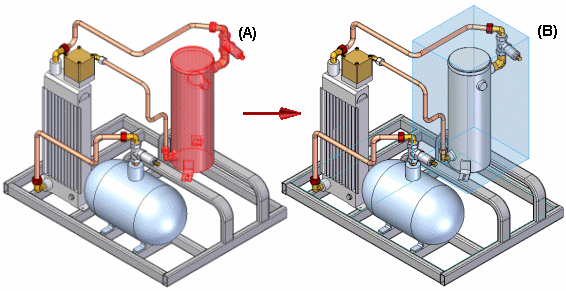

Using zones in assemblies
It can be useful to define a set of components in an assembly based on the volume of space the parts occupy. The Zones functionality on the Select Tools page in Solid Edge allows you to define a rectangular volume of space based on one or more assembly components you select. You can then use that named zone to select, display, or hide all the assembly components that are contained within the boundary of the zone. For example, you can select a named zone on the Select Tools page, then click the Hide Components command on the shortcut menu to hide all the assembly components in the zone.

You can use a zone to show, hide, and select parts, assemblies, assembly sketches, weld beads, coordinate systems, and reference planes in an assembly. Defining and using zones is especially useful when working with large assembly data sets. For more information on working with large assemblies, see the Working with large assemblies efficiently Help topic.
Defining zones
You define a zone using the Create Zone command on the Select Tools page. When you click the Create Zone button, a command bar is displayed, with the Origin and Size Step active, which allows you to define the initial volume of the zone by selecting one or more assembly components. The range box of the design body of each selected component is used to calculate the zone box volume.
Construction bodies and simplified bodies are ignored when calculating zone box volume.
You can select the components in the PathFinder page or the graphics window. For example, you can select a subassembly (A) using PathFinder. When you click the Accept button, a zone boundary box is displayed in the graphics window (B). The command bar then advances to the Modify Size Step, which allows you to further refine the size of the zone.

To change the size of the zone during the Modify Size Step, you can select a face on the zone box, and then select a keypoint on an adjacent part or a point in free space.
To control which components are included in the zone, you can specify whether the zone definition is inside or overlapping using the options on the command bar.
When you finish defining a zone, a zone boundary box is displayed in the graphics window (B), and a zone name is added to the Select Tools page. You can also edit the size of a zone later.
The zone boundary box volume is not associative to the parts used to define the zone. If you move, edit, or delete the parts used to define the zone, the size of the zone boundary box remains the same.
When you create the first zone in an assembly, the assembly structure must be updated. A message is displayed to warn you that updating the assembly structure may take several minutes, depending on the size of the assembly. For more information, see the Updating the assembly structure section of this Help topic.
Modifying zones later
You can edit the size of a zone later using the Edit Definition command on the shortcut menu when you select a zone entry in the Select Tools page, or a zone box in the graphics window. If you click the Origin and Size Step on the command bar, you can select new parts to redefine the zone boundary. If you click the Modify Size Step, you can edit the size of the zone boundary as described earlier.
Displaying zone boundary boxes
The zone box can be displayed or hidden in the graphics window.
-
You can use the zone shortcut menu commands to show and hide a zone boundary box display when you select a zone entry on the Select Tools tab or in the graphics window.
-
You can show or hide all the zone boundary boxes using the View tab→Show group→Zones command.
Using zones
Shortcut menu commands in the Select Tools page allow you to show only, show, hide, and select the components in a zone. You can also show all the parts in a zone by double-clicking a zone box in the graphic window.
A part can belong to one or more zones. As you add new components to an assembly, the components are automatically added to the zone(s) they fall within.
Drawing views of assembly zones
You can use the Drawing View Wizard to select an assembly zone volume to be shown in a drawing view. The assembly zone captures any part components that exist within the predefined volume.
You can choose an assembly zone from the .cfg, PMI model view, or Zone List on the Drawing View Options page of the Drawing View Wizard.
Zones and display configurations
The functionality of zones and display configurations differ in a number of ways. For more information, see the Comparing display configuration and zones section of the Displaying parts in assemblies Help topic.
Updating the assembly structure
When working with zones, assembly components that are considered to be inside or outside a zone is accurate as long as the assembly structure is up to date. The assembly structure can become out of date when multiple people are working on different subassemblies, and you then open a higher level assembly with some of those changed subassemblies hidden. For example, on the Open File dialog box, there are options that allow you to open an assembly using a display configuration, a zone, or with all components hidden.
You update the assembly structure using the Update Assembly Structure button on the Select Tools page. When you click the Update Assembly Structure button, the entire assembly structure is loaded into memory to ensure that the assembly structure is up to date.
Updating the assembly structure can take several minutes, depending on the size of the assembly.